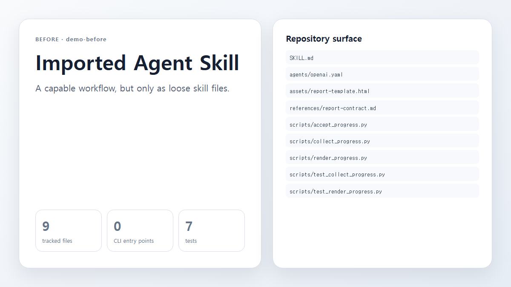
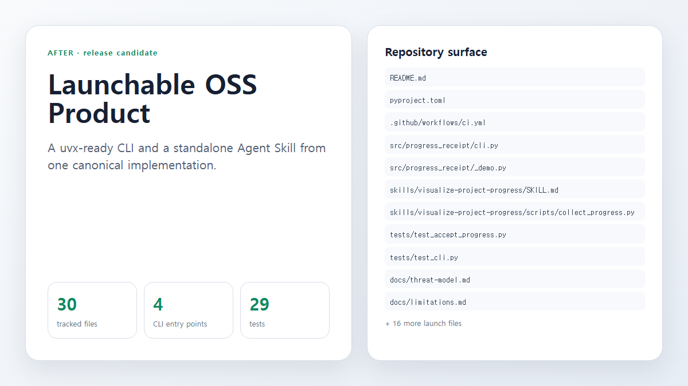

Before
Accepted baseline
The repository contained a SKILL.md, three loose scripts, a template, and seven focused tests.
The imported progress-report skill is now a tested, uvx-ready open-source CLI that still ships as a standalone Agent Skill.
The repository contained a SKILL.md, three loose scripts, a template, and seven focused tests.
The release adds package metadata, four CLI commands, standalone skill distribution, trust coverage, CI, and launch documentation.
Repository changes from demo-before through the v0.1.0 release candidate.
source: agentActual Git trees at demo-before and the release-candidate head, rendered as reviewed local captures.


547753f67dc0fix: align visual comparison labels with their capturesdb2d0a4723adfix: prioritize launch files in the comparison capture04154ee52650fix: keep self-report captures within the frame7de8371e146cbuild: add reproducible launch self-report generator0231d9c79769feat: build the progress-receipt CLI and standalone skillSanitization, evidence freshness, acceptance, tampering, path boundaries, truncation, packaging, and end-to-end behavior passed locally.
The diff adds the CLI, README, license, docs, CI workflow, and packaged standalone skill; this claim intentionally describes change rather than verification.
Ubuntu, macOS, and Windows jobs are configured, but this local report does not claim a hosted GitHub Actions result.
python -m unittest discover -s tests -v
| Status | Path | Delta |
|---|---|---|
| A | .github/workflows/ci.yml | +29 / -0 |
| A | .gitignore | +8 / -0 |
| A | LICENSE | +21 / -0 |
| A | README.md | +85 / -0 |
| D | SKILL.md | +0 / -48 |
| D | agents/openai.yaml | +0 / -4 |
| D | assets/report-template.html | +0 / -72 |
| A | docs/launch-todo.md | +8 / -0 |
| A | docs/limitations.md | +11 / -0 |
| A | docs/report-contract.md | +7 / -0 |
| A | docs/threat-model.md | +18 / -0 |
| A | pyproject.toml | +59 / -0 |
| D | references/report-contract.md | +0 / -106 |
| D | scripts/accept_progress.py | +0 / -171 |
| D | scripts/collect_progress.py | +0 / -329 |
| D | scripts/render_progress.py | +0 / -568 |
| D | scripts/test_collect_progress.py | +0 / -74 |
| D | scripts/test_render_progress.py | +0 / -142 |
| A | skills/visualize-project-progress/SKILL.md | +48 / -0 |
| A | skills/visualize-project-progress/agents/openai.yaml | +4 / -0 |
| A | skills/visualize-project-progress/assets/report-template.html | +72 / -0 |
| A | skills/visualize-project-progress/references/report-contract.md | +106 / -0 |
| A | skills/visualize-project-progress/scripts/accept_progress.py | +171 / -0 |
| A | skills/visualize-project-progress/scripts/collect_progress.py | +329 / -0 |
| A | skills/visualize-project-progress/scripts/render_progress.py | +568 / -0 |
| A | src/progress_receipt/__init__.py | +6 / -0 |
| A | src/progress_receipt/__main__.py | +9 / -0 |
| A | src/progress_receipt/_demo.py | +250 / -0 |
| A | src/progress_receipt/_skill_loader.py | +68 / -0 |
| A | src/progress_receipt/accept.py | +28 / -0 |
| A | src/progress_receipt/cli.py | +49 / -0 |
| A | src/progress_receipt/collect.py | +28 / -0 |
| A | src/progress_receipt/render.py | +28 / -0 |
| A | tests/test_accept_progress.py | +191 / -0 |
| A | tests/test_cli.py | +38 / -0 |
| A | tests/test_collect_progress.py | +140 / -0 |
| A | tests/test_package_layout.py | +33 / -0 |
| A | tests/test_render_progress.py | +211 / -0 |
| A | tools/generate_self_report.py | +329 / -0 |
changed means the diff contains a modification. verified means fresh evidence supports a claim. blocked means an observed check could not complete. not_observed means the outcome was not inspected.
Manifest text is machine-sanitized. Images are displayed only after an agent or human records a visual review; pixels are not described as sanitized. Agent-authored interpretation is labeled separately from Git and tool facts.